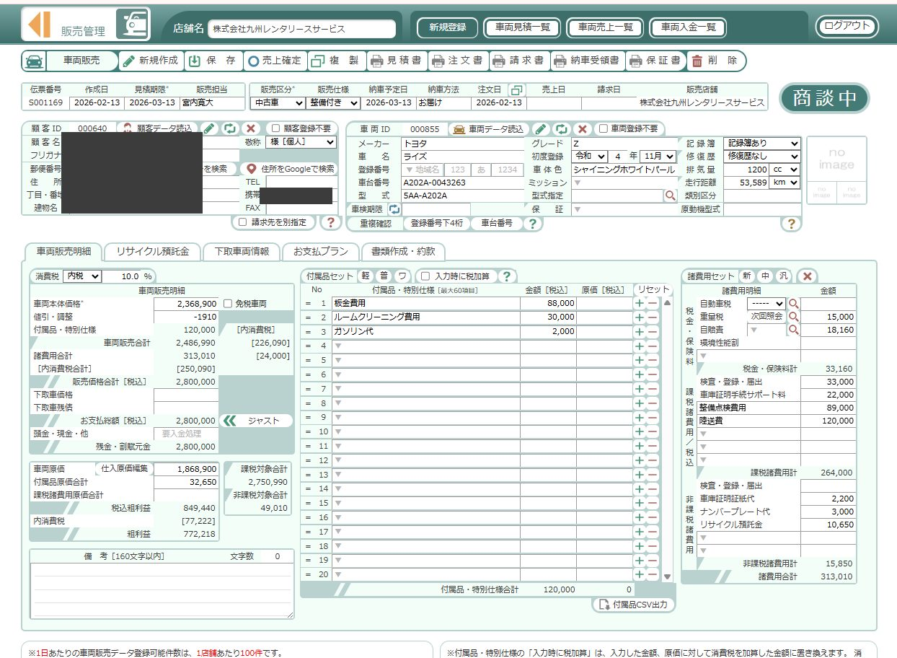

単元31
成約時の作業（フェーズ1）
この単元のゴール案
成約時の作業ができる
含む内容：成約時の初期作業
この単元の詳しいマニュアルは作成予定です（サンプルは単元9・13・20）。
8-3フェーズ1：成約時の初期作業
- 8-3-1
①業販登録（LINE報告）：出品票をグループLINE「全社車両仕入れ連絡」に共有して報告する
- 直営店の定型文：●部署名 ●仕入担当 ●販売担当 ●仕入日 ●売上先 ●会場 ●車名 ●車台番号
- ネクストマッチ利用時の定型文：ネクストマッチ【会社名】 ●仕入日 ●会場 ●車名 ●車台番号 ●書類送付先
- 8-3-2
②車両増減・成約報告シートに入力する
- 参照：https://docs.google.com/spreadsheets/d/1qpm5ZTms6_2B56xf64QV2oostiT1P14KsMuXi12Tzd8/edit?gid=824104596
- 直営店のフォーム「成約報告」：成約日／成約店舗／担当者（フルネーム）／お客様名（姓・名）／車種／車台番号（下4桁）／ローン会社名／売上額／粗利額／頭金／下取り・買取り（種別）／車種名／車台番号（全桁）／納車予測日／入金予測日／着金会社
- ネクストマッチ利用時のフォーム「ネクストマッチ_依頼書」：法人名／依頼日／車種／車台番号（下4桁）／ローン会社名／担当者名／売上額（税込）／粗利額（税込）／納車予定日／実入金額（税込）／入金予測日（最大45日）
- ネクストマッチの格納必須資料：信販可決画面、出品表、お客様との注文書、お客様との契約エビデンス（LINEのスクショ等）、請求書（業販の場合）
- 8-3-3
(③)お客様宛の注文書を作る
- ネクスト売：「ヴェルティス」で作成 図8-A
- レンタ売：「シンフォニー」で作成
- モビ売：「シンフォニー」で作成

図8-Aヴェルティス：仕入登録・原価登録の画面 - 8-3-4
④成約報告：グループLINE「【リース・低与信】販売チームライン」に共有して報告する
教育担当者のチェック
押すと印が付きます。この端末のブラウザにだけ保存されます。正式な記録は印刷したチェックリストに書いてください。